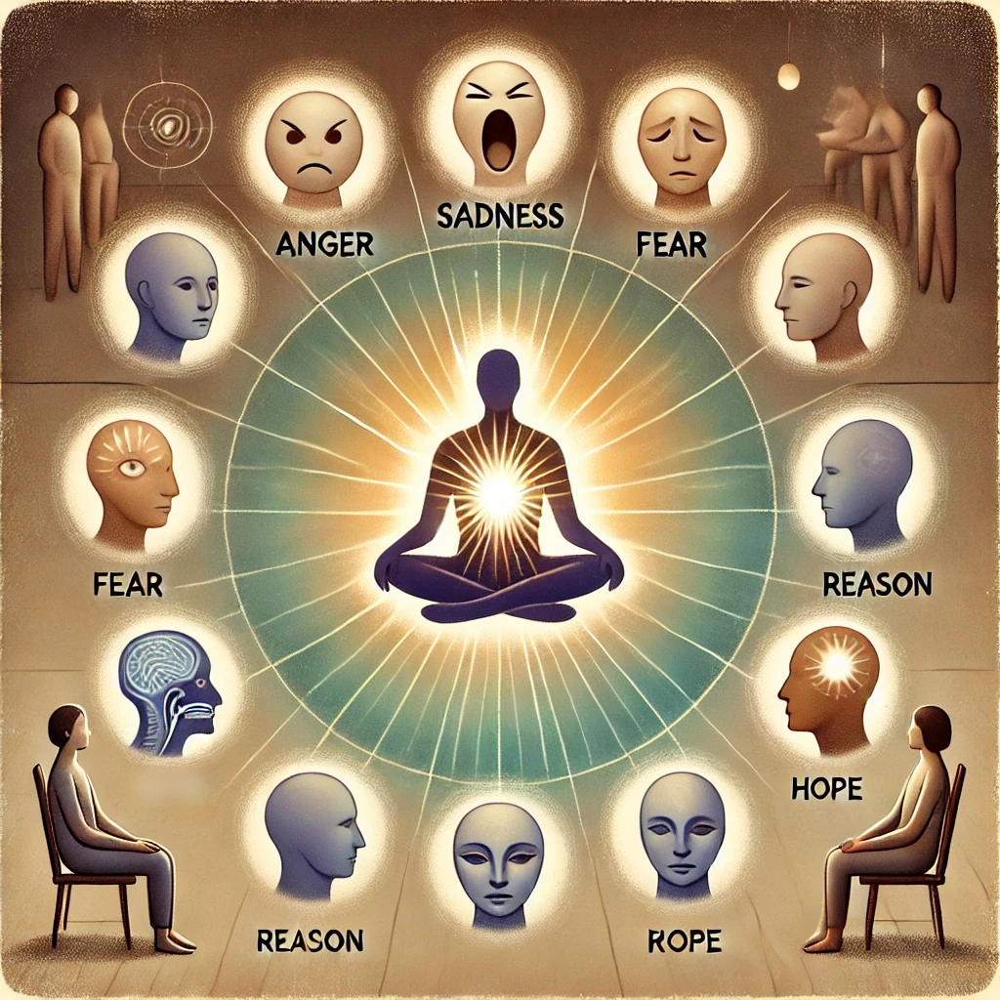

Vernunft ist ein Anker. Nicht im Sinne eines fertigen Instruments, das wir stets zur Hand hätten – sondern als eine leise Hoffnung: dass in uns eine Instanz existiert, oder entstehen kann, die dem Wahren und dem Guten Ausdruck verleiht.
Diese Hoffnung setzt voraus, dass im Menschen etwas Gutes angelegt ist. Ein Potential, das sich entfalten lässt. Doch in einer Welt, in der Zweifel überhandnehmen, erscheint genau diese Annahme fragwürdig. Zynismus wirkt dann wie ein Schutz – aber er führt in die Selbstverwerfung. Und wer sich selbst verwirft, hat alles verloren.
Vernunft ist darum mehr als Logik. Sie ist eine psychologische Gestalt, die sich herausbildet, wenn alle Stimmen in uns zu Wort kommen dürfen. Nicht als bloßes Chaos – sondern als Dialog. Ein innerer Prozess der Vermittlung.
Aus dieser Vielstimmigkeit entsteht etwas Neues: eine vereinigende Kraft, die größer ist als die Summe ihrer Teile. Etwas, das vorher nicht da war. Und das – durch die Modifikation aller Stimmen – so etwas wie eine innere Wahrheit ans Licht bringt.
Vernunft ist nicht gegeben. Sie ist ein Akt der Hoffnung. Und ein schöpferischer Prozess.
